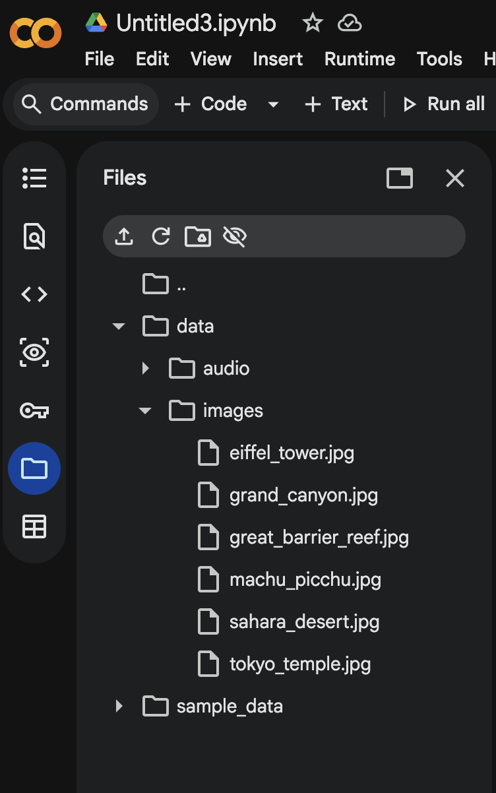

Gemini Embedding2 Multimodal Retrieval
Gemini Embedding 2
Introduction
In the earlier sections of this lab, we explored how embeddings work by converting text into numerical vectors using embedding models. We then stored and queried these embeddings using vector databases such as SingleStore and Pinecone to perform semantic search and retrieve relevant information based on meaning.
The Limitation of Traditional Embeddings
Traditionally, embedding models have been modality-specific separate models were required for different types of data. For example, one model would handle text embeddings, while a completely different model would handle images. This works well in isolated scenarios but becomes limiting when dealing with real-world data, where text and images often appear together within the same documents or systems.
What is Gemini Embedding 2?
Recently, Google introduced Gemini Embedding 2, a new generation of embedding models designed to be natively multimodal. Unlike traditional approaches, Gemini Embedding 2 allows both text and images to be represented within a single, unified embedding space.
Learn More
Read the full announcement from Google: Gemini Embedding 2
This means that different types of data can be compared, searched, and retrieved together without needing separate models or complex pipelines to bridge the gap between modalities.
What Does This Enable?
- Search for images using text queries
- Find visually similar images across datasets
- Work with documents that contain both textual and visual information
- Build more advanced AI systems that understand mixed data types
How It Connects to This Lab
You have already learned how to generate embeddings, store them in vector databases, and perform similarity searches. Gemini Embedding 2 builds on these same concepts but extends them beyond text, allowing you to work with multimodal data and create more flexible and intelligent applications.
Key Takeaway
As AI continues to evolve, multimodal embeddings represent an important step forward. They enable systems to more closely reflect how humans process information by combining text, visuals, and other signals resulting in richer and more meaningful search and retrieval experiences.
Gemini Embedding 2 — LAB
Important
Please open a new Google Colab notebook for this section. Click on "File" > "New notebook".
GPU Required
Make sure you are connected to a GPU runtime. Go to Runtime > Change runtime type and select GPU as the hardware accelerator.
Prerequisites
You need a Gemini API key to complete this lab. You can get one for free at Gemini Ai Studio. Use your personal Gmail account to sign up and generate a key.

Save to Key Vault
Once you have your Gemini API key, open the $ keys panel (bottom-left) and save it for easy access across all lab pages.
Step 1 — Install Dependencies
!pip install -q google-genai numpy scikit-learn matplotlib Pillow requests
Step 2 — Configure API Key
Enter your Gemini API key after executing the below task
1 2 3 4 5 | |
Note
When prompted, paste the Gemini API key you obtained from AI Studio. If you saved it in the $ keys panel, click the copy button there to grab it quickly.
Step 3 — Initialize Gemini Client & Imports
Now we'll import all the libraries we need and set up the Gemini client. This step connects to Google's Gemini Embedding 2 model, which we'll use to generate embeddings for text, audio and images throughout this lab. We're also importing tools for vector similarity (cosine similarity), visualization (matplotlib, t-SNE), and image handling (Pillow, requests).
1 2 3 4 5 6 7 8 9 10 11 12 13 14 15 16 17 18 19 20 | |
Note
The gemini-embedding-2-preview model supports both text, audio and image inputs in a single unified embedding space this is what makes it multimodal.
Step 4 — Download Sample Multimodal Data
Now let's build something practical — a Travel Destination Search Engine. Imagine a travel agency with a multimedia knowledge base containing:
- Text descriptions of destinations
- Photos of landmarks and scenery
- Audio narrations describing destinations
- Short video clips of destinations
Users can query this system with any modality (text, image, or audio) to find matching destinations. First, we need to download sample images for our knowledge base.
What This Code Does
The code below downloads 6 destination images (Eiffel Tower, Grand Canyon, Tokyo Temple, Great Barrier Reef, Machu Picchu, Sahara Desert) from public sources. It includes a fallback mechanism — if a download fails, it tries an alternative URL, and if all URLs fail, it generates a synthetic placeholder image so the lab can continue without interruption.
1 2 3 4 5 6 7 8 9 10 11 12 13 14 15 16 17 18 19 20 21 22 23 24 25 26 27 28 29 30 31 32 33 34 35 36 37 38 39 40 41 42 43 44 45 46 47 48 49 50 51 52 53 54 55 56 57 58 59 60 61 62 63 64 65 66 67 68 69 70 71 72 73 74 75 76 77 78 79 80 81 82 83 84 85 86 87 88 89 90 91 92 93 94 95 96 97 98 99 100 101 102 103 | |
What Just Happened?
We now have a data/images/ folder with 6 destination photos. These images will be converted into embeddings using Gemini Embedding 2, so we can later search for destinations using text queries like "ancient ruins in the mountains" and get back matching images. Also you will notice a new folder created.


Step 5 — Create the Travel Destination Knowledge Base (Text + Metadata)
Now we'll build our knowledge base a structured dictionary that pairs each destination with its text description, image path, and tags. Think of this as the data a travel agency would have in their system. Each entry contains:
- name — the destination's display name
- description — a rich text description (this will be embedded as text)
- image — path to the photo we downloaded (this will be embedded as an image)
- tags — categories for filtering
Later, we'll generate embeddings for both the text descriptions and the images, and store them together in a unified embedding space — so a user can search using either text or images and find matching destinations.
1 2 3 4 5 6 7 8 9 10 11 12 13 14 15 16 17 18 19 20 21 22 23 24 25 26 27 28 29 30 31 32 33 34 35 36 37 38 39 40 41 42 | |
What Just Happened?
We've created a structured knowledge base with 6 travel destinations. Each entry has a text description, an image reference, and tags. In the next steps, we'll use Gemini Embedding 2 to convert both the text and images into vectors placing them in the same embedding space so we can search across modalities.
Step 6 — Generate Audio Narrations for Each Destination (using gTTS)
Gemini Embeddingsv2 also supports audio as a modality. To demonstrate this, we'll generate audio narrations for each destination using gTTS (Google Text-to-Speech).
What is gTTS?
gTTS is a Python library that converts text into spoken audio using Google's Text-to-Speech API. It takes a string of text and produces an MP3 audio file no API key required. It's a simple way to programmatically create voice narrations from text descriptions.
First, install gTTS:
!pip install -q gTTS
Dependency Warning — Safe to Ignore
You may see an error like:
ERROR: pip's dependency resolver does not currently take into account all the packages
that are installed. This behaviour is the source of the following dependency conflicts.
typer 0.24.1 requires click>=8.2.1, but you have click 8.1.8 which is incompatible.
Now let's generate a short audio narration for each destination and link it to our knowledge base:
1 2 3 4 5 6 7 8 9 10 11 12 13 14 15 16 17 18 19 20 21 22 23 24 | |
Note
In Google Colab, you can verify the audio files were created by expanding the data/audio/ folder in the file browser (left sidebar). You should see 6 .mp3 files one for each destination.

Step 7 — Preview Our Multimodal Data
Before we generate any embeddings, let's take a look at what we've built so far. This step displays all 6 destination images in a grid and plays a sample audio narration giving you a visual and auditory preview of the multimodal data that will be embedded in the next steps.
1 2 3 4 5 6 7 8 9 10 11 12 13 14 15 16 17 18 19 20 | |
Note
You should see a 2x3 grid of destination photos and an audio player for the Paris narration. Hit play to listen! This is the raw data that Gemini Embedding 2 will convert into vectors placing text, images, and audio into a single searchable embedding space.
Step 8 — Generate Embeddings for All Modalities
Now we'll use Gemini Embedding 2 to embed all our data text descriptions, images, and audio into the same vector space. This is what makes cross-modal retrieval possible: a text query and an image of the same concept will have similar embeddings.
We will start by defining helper functions one for each modality. Each function takes an input (text string, image file, or audio file), sends it to the Gemini Embedding 2 model, and returns a numerical vector (array of floats). We also define a cosine similarity function to compare how close two vectors are, a score of 1.0 means identical, 0.0 means unrelated.
1 2 3 4 5 6 7 8 9 10 11 12 13 14 15 16 17 18 19 20 21 22 23 24 25 26 27 28 29 30 31 32 33 34 35 36 | |
What Each Function Does
| Function | Input | Output |
|---|---|---|
embed_text() |
A text string | Vector (array of floats) |
embed_image() |
Path to a .jpg file |
Vector (array of floats) |
embed_audio() |
Path to a .mp3 file |
Vector (array of floats) |
cosine_sim() |
Two vectors | Similarity score (0.0 to 1.0) |
What is types.Part.from_bytes()? (click to expand)
For text, we can pass the string directly to the API. But for images and audio, we need to send raw binary data. types.Part.from_bytes() wraps the file's bytes along with its MIME type (e.g., image/jpeg or audio/mpeg) into a format the Gemini API understands. Think of it as telling the API: "Here's a file, it's a JPEG image" or "Here's a file, it's an MP3 audio", so the model knows how to process it.
Note
All three embedding functions return vectors in the same dimensional space this is the key innovation of Gemini Embedding 2. A text vector and an image vector can be directly compared using cosine similarity because they live in the same unified embedding space.
Step 9 — Generate Embeddings for All Destinations (Text, Image, Audio)
Now we put our helper functions to work. This step loops through every destination in our knowledge base and generates three embeddings for each one from the text description, one from the image, and one from the audio narration. All three are stored together in an embedding_db dictionary, which becomes our searchable vector database.
The time.sleep(1) between each API call is there to respect rate limits on the Gemini API without it, you may get throttled if you send too many requests too fast.
1 2 3 4 5 6 7 8 9 10 11 12 13 14 15 16 17 18 19 20 21 22 23 24 25 26 27 28 29 30 31 32 33 34 35 36 | |
This Step Takes ~30 Seconds
The code makes 18 API calls (6 destinations x 3 modalities each) with 1-second pauses between them. Be patient while it runs you'll see progress printed for each destination.
What Just Happened?
We now have an embedding_db with 18 embeddings total 6 text, 6 image, and 6 audio vectors. Each vector lives in the same dimensional space, which means we can now compare a text query against image embeddings, or an audio clip against text embeddings. This is the foundation of our multimodal search engine.
What does Embedding dimension: 3072 mean? (click to expand)
Each embedding is an array of 3,072 floating-point numbers. This is the dimensionality of the Gemini Embedding 2 model every piece of content (text, image, or audio) gets converted into a vector with exactly 3,072 values.
Why does dimensionality matter?
Think of dimensions as the number of "features" the model uses to describe your content. More dimensions = more detail captured:
| Dimensions | Trade-off |
|---|---|
| Lower (e.g., 768, 1,536) | Faster to compute & search, uses less memory, but may miss subtle differences between similar content |
| Higher (e.g., 3,072) | Captures more nuance and fine-grained meaning, better at distinguishing similar items, but requires more storage and slightly slower to search |
For a small knowledge base like ours (6 destinations), 3,072 dimensions is no problem. For production systems with millions of vectors, you might choose a lower-dimensional model to balance accuracy vs. cost and speed.
For reference: OpenAI's text-embedding-3-small uses 1,536 dimensions, while text-embedding-3-large uses 3,072 the same as Gemini Embedding 2.
Step 10 — Text-to-Multimodal Search
This is where it all comes together. Because all modalities live in the same embedding space, a single text query can be compared against text descriptions, images, AND audio narrations simultaneously. The search function computes cosine similarity between your query and every embedding in the database, then ranks results by their average score across all modalities.
We define two functions here:
search_destinations()takes a query embedding, compares it against all destinations across all modalities, and returns the top matches ranked by average similarity scoredisplay_search_results()visualizes the results by showing destination images, scores broken down by modality (text, image, audio), and an overall ranking
1 2 3 4 5 6 7 8 9 10 11 12 13 14 15 16 17 18 19 20 21 22 23 24 25 26 27 28 29 30 31 32 33 34 35 36 37 38 39 40 41 42 43 44 45 46 47 48 49 50 51 52 53 54 55 56 57 58 59 60 61 62 63 64 | |
How the Scoring Works
For each destination, the search computes 3 separate similarity scores (one per modality) and then averages them into a single combined score. This means a destination that matches well across all modalities will rank higher than one that only matches on text alone. The breakdown lets you see which modality contributed most to the match.
Note
We haven't run any queries yet this step just defines the search engine. In the next step, we'll fire actual queries and see the results.
Step 11 — Text Search — Try Different Queries!
Now let's put our search engine to the test. We'll run 4 natural language queries each describing a different type of travel experience and see which destinations the system returns.
Here's what happens for each query:
embed_text(query, task_type="RETRIEVAL_QUERY")— converts the search query into a 3,072-dimension vector. Notice we useRETRIEVAL_QUERYhere (notRETRIEVAL_DOCUMENT) — this tells the model the text is a search query rather than a document to be stored, which helps optimize the embedding for retrieval.search_destinations(query_emb, top_k=3)— compares the query vector against all 18 embeddings (text + image + audio) in our database and returns the top 3 matches.display_search_results()— shows the matching destination images with similarity scores broken down by modality.
1 2 3 4 5 6 7 8 9 10 11 12 | |
What to Look For
Check whether the results make sense! For example:
- "ancient ruins in the mountains" should match Machu Picchu
- "snorkeling in warm tropical water" should match Great Barrier Reef
- "romantic European city with great food" should match Paris
- "vast empty landscape under the stars" should match Sahara Desert
The scores show how well each modality (text, image, audio) contributed to the match. You'll notice that text scores are typically highest since the query is text-based, but image and audio scores still contribute that's the power of a unified embedding space.
Step 12 — Image-to-Multimodal Search (Cross-Modal Retrieval)
In the previous step we searched using text. Now let's flip it we'll use an image as the query instead. This is cross-modal retrieval: the system takes an image it has never seen before, embeds it, and compares that embedding against all text descriptions, images, and audio in the database to find the best match.
This step does the following:
- Downloads a new coral reef / ocean photo (not one from our knowledge base) to use as the query image with fallback to a synthetic image if the download fails
- Displays the query image so you can see what we're searching with
embed_image()converts the query image into a 3,072 dimension vectorsearch_destinations()compares the image vector against all 18 embeddings in the databasedisplay_search_results()shows the top 3 matching destinations with scores
1 2 3 4 5 6 7 8 9 10 11 12 13 14 15 16 17 18 19 20 21 22 23 24 25 26 27 28 29 30 31 32 33 34 35 36 37 38 39 40 41 42 43 44 45 46 47 48 49 50 51 | |
Why This is Powerful
The query image is a completely new photo the system has never seen it's not in our knowledge base. Yet because both images live in the same embedding space, the model understands that an underwater coral photo is semantically similar to the Great Barrier Reef destination. It even matches against the text description and audio narration of that destination not just image-to-image comparison.
Note
This is the core idea behind multimodal RAG (Retrieval Augmented Generation). In a real application, users could upload a photo from their phone and the system would find matching destinations, products, or documents without any keyword matching.
Let's try another image query this time with a mountain landscape to see if the system can match it to the right destinations:
1 2 3 4 5 6 7 8 9 10 11 12 13 14 15 16 17 18 19 20 21 22 23 24 25 26 27 28 29 30 31 32 33 34 35 36 37 38 39 40 41 42 43 44 45 46 47 | |
Expected Result
A mountain/hills photo should match destinations like Machu Picchu (Andes mountains). Notice how the system understands visual similarity it doesn't need text labels or tags to make the connection, just the raw image pixels converted into embeddings.
Step 13 — Audio-to-Multimodal Search
We've searched with text (Step 11) and images (Step 12). Now let's complete the trifecta searching with audio. Imagine a user describing their dream destination verbally. Gemini Embedding 2 can embed audio natively no transcription or speech-to-text step needed. The raw audio waveform goes directly into the model and comes out as a vector in the same unified space.
Here's what this step does:
- Generates a spoken query using gTTS "I want to visit a place with beautiful coral reefs and tropical fish for snorkeling"
- Plays the audio in the notebook so you can hear it
embed_audio()sends the raw MP3 directly to Gemini Embedding 2 (no transcription!)search_destinations()compares the audio vector against all text, image, and audio embeddingsdisplay_search_results()shows the top matches
1 2 3 4 5 6 7 8 9 10 11 12 13 14 15 16 17 18 19 | |
No Transcription Needed
Unlike traditional speech-based search systems that first convert audio to text (ASR/speech-to-text) and then search on the text, Gemini Embedding 2 processes the raw audio signal directly. The model understands the spoken content and maps it into the same embedding space as text and images, all in one step.
Expected Result
The spoken query about snorkeling and coral reefs should return Great Barrier Reef as the top result even though the query is audio and the database contains text descriptions and images. All three modalities are being compared simultaneously.
Summary & Key Takeaways
In this lab, we built a Multimodal Travel Destination Search Engine using Gemini Embedding 2 demonstrating how a single embedding model can understand and connect text, images, and audio in one unified space.
What We Built
- A knowledge base with 6 travel destinations, each containing text descriptions, photos, and audio narrations
- A unified embedding index spanning 3 modalities (18 total embeddings)
- A search engine that accepts queries in any modality (text, image, or audio) and retrieves results across all modalities
Key Capabilities Demonstrated
| Capability | What It Does |
|---|---|
| Text Embeddings | Semantic search over destination descriptions |
| Image Embeddings | Reverse image search find destinations from photos |
| Audio Embeddings | Native audio understanding without transcription |
| Cross-Modal Retrieval | Use one modality to search across all others |
The Big Takeaway
Traditional embedding models require separate models for text, images, and audio. Gemini Embedding 2 unifies all modalities into a single embedding space with 3,072 dimensions meaning a photo of a coral reef, a text description of snorkeling, and a spoken narration about tropical waters all end up as nearby vectors. This is what makes true multimodal search possible.
Where Do You Go From Here?
We kept this lab small on purpose 6 destinations, a handful of queries so you could see the mechanics clearly. But think about what happens when you plug this into something real. You could connect it to a vector database like Pinecone or ChromaDB and load in thousands of destinations. You could throw in video clips, PDF brochures, even user reviews, Gemini Embedding 2 handles them all in the same space. Pair it with a RAG pipeline and now your search engine doesn't just find results, it explains why it picked them. Or wrap the whole thing in a simple web app and you've got a working product. And here's where it gets interesting for us tie this into your Webex workflows and you could build intelligent assistants that search across meeting recordings, shared documents, and chat messages all at once, or create bots that understand voice queries, images, and text in the same conversation. The building blocks are exactly what you just built the only difference is scale and what you choose to connect it to.
👉 This concludes the task. Click the next Task on the left to continue.